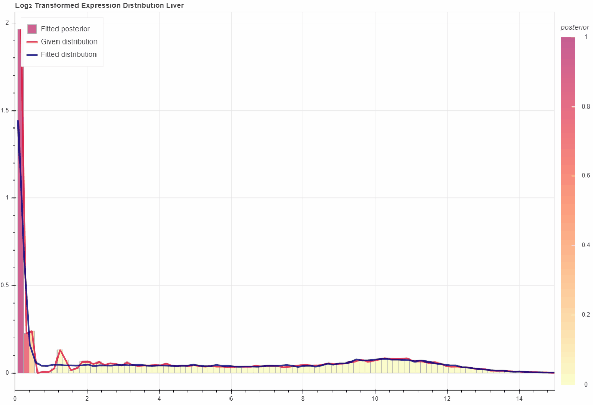

Manual¶
Caiman provides application programming interface (API) in Python for developers or bioinformaticians who wants to control more parameters used in the analysis.
Correct Expression¶
import os
from caiman import Analysis
xprs = os.path.realpath('test/expression.tsv')
groups = os.path.realpath('test/groups.tsv')
analysis = Analysis(xprs, groups, **{'index_col': 0, 'sep': '\t'})
corrected = analysis.correct(
method='filter',
adaptive_num_components=False,
verbose=False,
)
corrected.to_csv(os.path.realpath('caiman_out.tsv'), sep='\t')
Information of Input Data¶
print(analysis.dataset)
Interactive Visualization¶
Please execute this after analysis.correct()
analysis.distplot('Liver', outdir='outdir')

Fitted GaussianMixtureModels¶
Please execute this after analysis.correct().
For specific group:
gmm = analysis.get_gmm('Liver')
print(gmm)
Result:
GaussianMixtureModel
Attributes
num_iterations: 10
verbose: False
store_checkpoints: False
adpative_num_components: False
is_fitted: True
Statistics
num_components:
3
means:
[ 0. 10.543127 4.2125125]
standard deviations:
[0.17445941 1.5966247 3.590845 ]
For every group:
gmms = analysis.get_gmm()
print(gmm)
Result:
{'Embryonic Facial Prominence': <caiman.model.GaussianMixtureModel>, 'Forebrain': <caiman.model.GaussianMixtureModel>, 'Heart': <caiman.model.GaussianMixtureModel>, 'Hindbrain': <caiman.model.GaussianMixtureModel>, 'Intestine': <caiman.model.GaussianMixtureModel>, 'Kidney': <caiman.model.GaussianMixtureModel>, 'Limb': <caiman.model.GaussianMixtureModel>, 'Liver': <caiman.model.GaussianMixtureModel>, 'Lung': <caiman.model.GaussianMixtureModel>, 'Midbrain': <caiman.model.GaussianMixtureModel>, 'Neural Tube': <caiman.model.GaussianMixtureModel>, 'Stomach': <caiman.model.GaussianMixtureModel>}
Fitted Statistics¶
Get fitted means
means = gmm.get_means()
print(means)
Result:
array([ 0. , 10.543127 , 4.2125125], dtype=float32)
Get fitted standard deviations
stds = gmm.get_stds()
print(stds)
Result:
array([0.17445941, 1.5966247 , 3.590845 ], dtype=float32)
Sample from GaussianMixtureModels¶
Please execute this after analysis.correct(). The first element in the returned tuple is the sampling expression value, while the second element denote the labels.
sampled = gmm.sample(100)
print(sampled)
Results:
(array([ 0.36919074, -0.10474598, 0.09662524, -0.07132469, 13.06010501,
8.73190427, 9.51180642, 10.94915712, 11.04356705, 11.81309644]),
array([0, 0, 1, 1, 2, 2, 2, 2, 2, 2]))
Predict with GaussianMixtureModels¶
Please execute this after analysis.correct(). Return the label of input data.
gmm.predict(np.linspace(0, 1000, 100))
Results:
array([0, 2, 2, 2, 2, 2, 2, 2, 2, 2, 2, 2, 2, 2, 2, 2, 2, 2, 2, 2, 2, 2,
2, 2, 2, 2, 2, 2, 2, 2, 1, 1, 1, 1, 1, 1, 1, 1, 1, 1, 1, 1, 1, 1,
1, 1, 1, 1, 1, 1, 1, 1, 1, 1, 1, 1, 1, 1, 1, 1, 1, 1, 1, 1, 1, 1,
1, 1, 1, 1, 1, 1, 1, 1, 1, 1, 1, 1, 1, 1, 1, 1, 1, 1, 1, 1, 1, 1,
1, 1, 1, 1, 1, 1, 1, 1, 1, 1, 1, 1])
Posterior Probability¶
Please execute this after analysis.correct(). Return the posterior probability of each component given the input data.
gmm.predict(np.linspace(0, 1000, 10))
Results:
array([[9.7392517e-01, 0.0000000e+00, 0.0000000e+00, 0.0000000e+00,
0.0000000e+00, 0.0000000e+00, 0.0000000e+00, 0.0000000e+00,
0.0000000e+00, 0.0000000e+00],
[3.9015721e-11, 1.1948496e-01, 3.7362605e-01, 5.5182225e-01,
6.5891063e-01, 7.2536421e-01, 7.6906377e-01, 7.9936570e-01,
8.2131582e-01, 8.3778638e-01],
[2.6074827e-02, 8.8051498e-01, 6.2637395e-01, 4.4817781e-01,
3.4108940e-01, 2.7463582e-01, 2.3093626e-01, 2.0063429e-01,
1.7868416e-01, 1.6221364e-01]], dtype=float32)